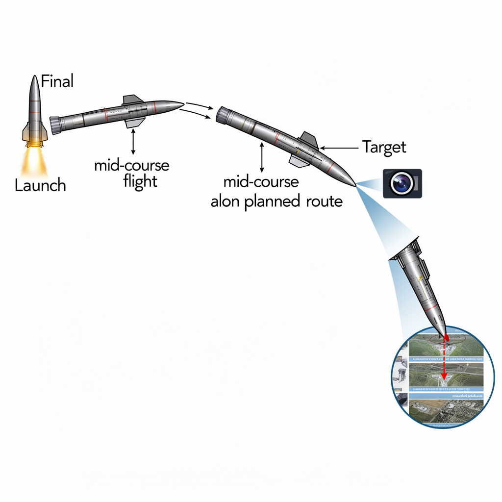

AI Panorama · fly through the Qwen 3.8 Max edition
This page was written entirely by Qwen 3.8 Max (Alibaba), as one of the magazine's editions - eight AI models each wrote their own version of every story from the same frozen sources.
An encyclopedia idea, explained by this edition wherever the stories leaned on it.

Terminal guidance is the final phase of steering a weapon onto its target. A missile may spend most of its flight following a pre-planned route, inertial navigation, or satellite fixes, but in the last stretch of flight it needs more precise information to hit a specific point. Terminal guidance systems switch on when the weapon is close enough to sense the target area, using radar, infrared sensors, laser designation, or cameras to lock on and correct the course. This is the part of a missile's flight where accuracy is decided. A weapon that can recognise a target visually at this stage can, in principle, aim itself without a human operator keeping it on course by radio. That makes terminal guidance one of the places where onboard AI and machine vision become practically significant: not because they fly the whole mission, but because they shape the final decisions in the seconds before impact.